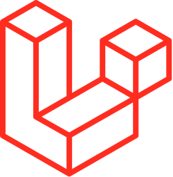

ANGULAR JS

AngularJS está construido en torno a la creencia de que la programación declarativa es la que debe utilizarse para generar interfaces de usuario y enlazar componentes de software, mientras que la programación imperativa es excelente para expresar la lógica de negocio.1 Este framework adapta y amplía el HTML tradicional para servir mejor contenido dinámico a través de un data binding bidireccional que permite la sincronización automática de modelos y vistas. Como resultado, AngularJS pone menos énfasis en la manipulación del DOM y mejora la testeabilidad y el rendimiento.
Objetivos de diseño:
- Disociar la manipulación del DOM de la lógica de la aplicación. Esto mejora la capacidad de prueba del código.
- Considerar a las pruebas de la aplicación como iguales en importancia a la escritura de la aplicación. La dificultad de las pruebas se ve reducida drásticamente por la forma en que el código está estructurado.
- Disociar el lado del cliente de una aplicación del lado del servidor. Esto permite que el trabajo de desarrollo avance en paralelo, y permite la reutilización de ambos lados.
- Guiar a los desarrolladores a través de todo el proceso del desarrollo de una aplicación: desde el diseño de la interfaz de usuario, a través de la escritura de la lógica del negocio, hasta las pruebas.
Angular sigue el patrón MVVM (Model View View-Model) de ingeniería de software y alienta la articulación flexible entre la presentación, datos y componentes lógicos. Con el uso de la inyección de dependencias, Angular lleva servicios tradicionales del lado del servidor, tales como controladores dependientes de la vista, a las aplicaciones web del lado del cliente. En consecuencia, gran parte de la carga en el backend se reduce, lo que conlleva a aplicaciones web mucho más ligeras.
LARAVEL

Laravel es un popular framework de PHP. Permite el desarrollo de aplicaciones web totalmente personalizadas de elevada calidad.
Es uno de los frameworks más utilizados y de mayor comunidad en el mundo de Internet.
Como framework resulta bastante moderno y ofrece muchas utilidades potentes a los desarrolladores, que permiten agilizar el desarrollo de las aplicaciones web.
Laravel pone énfasis en la calidad del código, la facilidad de mantenimiento y escalabilidad, lo que permite realizar proyectos desde pequeños a grandes o muy grandes. Además permite y facilita el trabajo en equipo y promueve las mejores prácticas.
Laravel es Fácil de Aprender
Laravel es relativamente fácil de aprender, si se tienen los conocimientos adecuados. Laravel requiere una comprensión general de PHP y conceptos de programación orientada a objetos (POO) para su uso efectivo. Saber al menos algo de HTML también es útil. Y para cualquier arquitectura MVC, también es útil comprender los sistemas de gestión de bases de datos relacionales, como MySQL o PostgreSQL.
Laravel Simplifica el Proceso de Desarrollo
Desde el principio, Laravel fue diseñado para simplificar las tareas que son comunes en una variedad de proyectos de desarrollo web como el enrutamiento, la autenticación, la migración, el almacenamiento en caché, y más. Laravel simplifica la integración de módulos prefabricados en una aplicación, utilizando interfaces de línea de comandos intuitivas y expresivas y Composer.
Laravel también tiene una amplia colección de documentación en línea, que es un buen punto de partida para los desarrolladores más experimentados. También hay disponible una amplia variedad de recursos de aprendizaje en línea dirigidos a todos los niveles de habilidad.
Laravel Tiene Herramientas Para Desarrolladores de Todos los Niveles
Laravel se describe a sí mismo como un framework progresivo, lo que significa que incluye una variedad de funcionalidades que los usuarios de todos los niveles encontrarán útiles. Por ejemplo, los principiantes tienen acceso a kits de inicio para módulos como las características básicas de autenticación. Muchas de estas herramientas se discuten en mayor detalle a continuación.